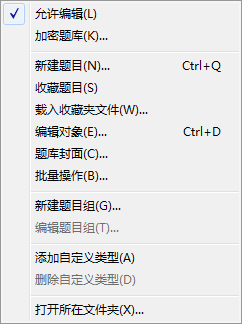
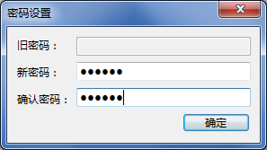

“题库”菜单
“题库”菜单

“题库”菜单的相关说明如下：
当前选中题库是否为只读，只读则菜单项不被勾选。
 | 当新建一个题库时，默认允许编辑；
当打开一个题库时，默认不允许编辑。 |
|---|
将题库进行加密或取消加密。打开加密题库、取消加密状态、将加密题库保存为兼容题库模式，均需要先输入密码。
当加密题库时，将弹出如下的对话框对密码进行设置：

所设密码的要求为：长度6~16位，为半角数字、半角字母、半角符号的组合。若不输入新密码，则视为取消加密。
设置密码后，不会立即使题库文件加密，保存后才会完成加密操作。
| 本应用程序采用较强的加密算法，若忘记密码，几乎无法破解，敬请牢记密码。 |
|---|
| 题目组不可用此法创建。 |
|---|
将当前选中题目收藏至收藏夹内，相关内容详见
收藏题目。
可从其它路径载入收藏夹文件。
| 即使从其它路径载入收藏夹文件，保存时仍将自动保存至和题库同路径。 |
|---|
将主界面中选中的内容进行编辑。
-
当选中左侧窗格的题库节点时，执行“修改题库名称”动作，题库名称最长支持64个字符。
-
当选中左侧窗格的自定义类型节点时，执行“修改自定义类型名称”动作，自定义类型名称最长支持16个字符。
-
当选中右侧窗格的题目时，执行“编辑题目”动作，详见编辑题目。
给当前选中题库设置封面信息，被设置了封面的题库可以保存为带封面的题库格式，详见
题库封面
给当前选中题库进行某些预设好的批量操作，详见
批量操作。
给当前选中题库创建新的题目组，或对选中的题目组进行编辑，详见
题目组。
将题库文件在Windows资源管理器中显示。
GX Software 2020-2021
V2.0